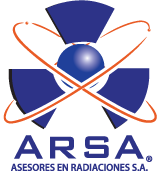

Accesorios plomados para protección radiológica
CARACTERÍSTICAS:
• Mandil plomado adecuado para aplicaciones de rayos x convencional, tomografía, mastografía y ortopantomografía.
• Modelo E536.
• Material patentado por Shielding.
• Protección equivalente a 0.5 milímetros de plomo @ 100 kVp, suficiente para cumplir con los requerimientos de la NOM-229-SSA1-2002.
• Cómodo, tiene almohadillas en los hombros.
• Ligero, pesa 5 kilos.
• Fácil limpieza, terminado en vinil.
• Resistente, se abrocha con jaretas.
• Pregunte por nuestros modelos adecuados para aplicaciones para fluorosocopia y hemodinamia.
• También contamos con variedad de artículos plomados: lentes y goggles, collarines tiroideos, guantes de sujeción y quirúrgicos, así como protectores gonadales.
DATOS COMPLEMENTARIOS: Para mayor información comunicarse a:

Tel./Fax: (55) 5538-8690
Lada sin costo: 01 800-045-2772
e-mail: ventas@arsamx.com
www.arsamx.com